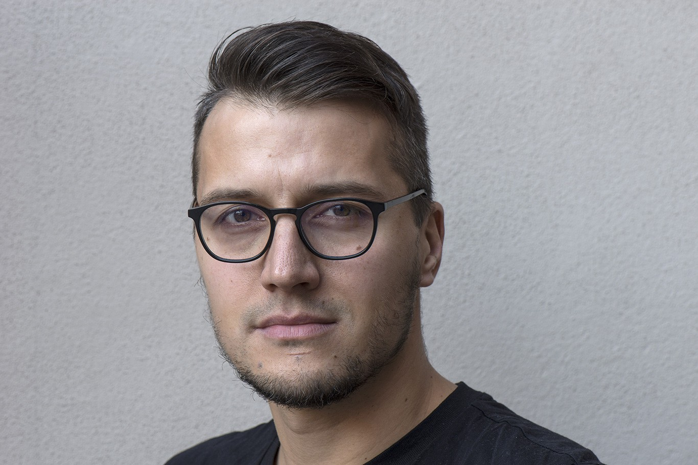

Markus Rozkalns

UX/UI designer based in Riga and working closely with Switzerland. I design interfaces for complex, high-stakes systems, from flight simulators to banks and railways.
Most recently I led UX/UI at Loft Dynamics, the Swiss maker of EASA and FAA qualified VR flight simulators: the instructor operating station, the LoftHUB pilot portal, the website and the brand.
Before that I founded the design studio Graftik and ran it until it was sold in 2025. Along the way I’ve designed for Roche, DNB, Apple, IIHF and Metrohm.
I also teach UX/UI and digital design at the Art Academy of Latvia and supervise BA theses. One student project I led, EMORI, won a Red Dot Award.
- Based in
- Riga · Zurich
- Languages
- English, German, Latvian
- Focus
- Aviation, simulation, complex systems
- AI training
- UC Berkeley Haas School of Business, 2025
Experience
- 2024–2026Loft DynamicsUX/UI designer: the website via Graftik from 2024, then freelance from 2025, about one week a month on site: instructor operating station, LoftHUB, website and brandSwitzerland
- 2016–nowArt Academy of LatviaDocent, UX/UI and digital design; BA thesis supervisorLatvia
- 2009–2025GraftikFounder of a design studio, sold in 2025Latvia


Recognition
- 2025Executive AI program certificateUC Berkeley Haas School of Business · AI for Executives ProgramUSA
- 2024Erasmus+ Quality AwardHuman Rights GuideEU
- 2023Red Dot AwardEMORI, a student project I led at the Art Academy of LatviaGermany
- 2020Latvian National Design AwardAsya, an AI conversation coachLatvia
How I work
I go to the people who use the product, let them dream the ideal, and design for the need behind it. Every decision traces back to evidence. AI speeds up my delivery, but it never replaces the research.
- 8–10 weeksUX auditAudit report and Figma file6 steps
- 4–6 monthsNew productFigma, working prototype and design system7 steps
- 3–5 monthsRedesignFigma, prototype, design system and a before/after report7 steps
“He was excellent at turning insights from interviews and workshops into concrete requirements, user journeys, user stories, priorities and, ultimately, compelling UX and UI concepts.”
 Fabi Riesen, founder and former CEO & CTO · Loft Dynamics · Switzerland
Fabi Riesen, founder and former CEO & CTO · Loft Dynamics · SwitzerlandTranslated from the German reference letter
When I’m not designing, I love to be in the mountains. I film my hikes for my YouTube channel.